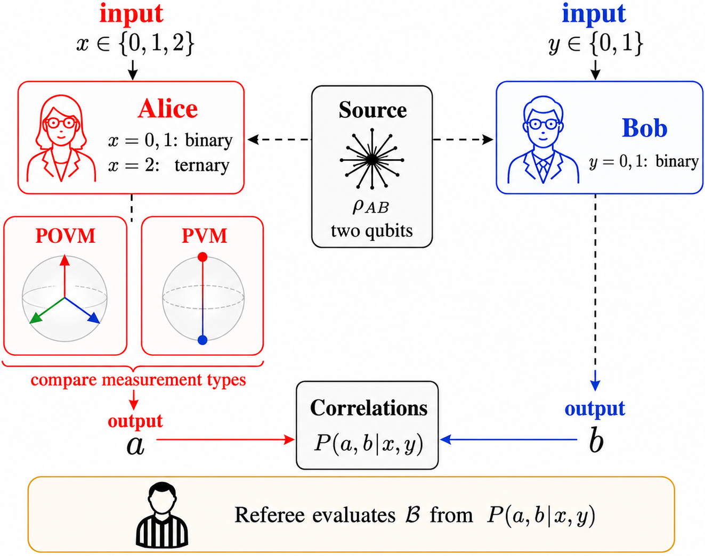

A Lean certificate is provided verifying the separation theorem bounding qubit projective strategies below the POVM Bell value.
Abstract
Generalized measurements can be implemented projectively after enlarging the Hilbert space, but this dilation changes the available local dimension. We construct a Bell functional with rational coefficients that separates the two measurement models at local dimension two. An explicit three-outcome qubit positive-operator-valued measure with rational matrix entries attains $2\sqrt2+1/100$. On the other hand, all qubit-projective strategies are bounded by $2\sqrt2+\sqrt5/250+\sqrt2/32400$, giving a fully analytic certified gap greater than $1/1000$. To our knowledge, this is the first fully analytic Bell-functional separation between qubit POVMs and qubit projective measurements over arbitrary shared two-qubit states. Lean certificate for the separation theorem is provided for completeness. Separately, an exact level-3 noncommutative sum-of-squares certificate proves that the explicit qubit strategy attains the unrestricted finite-dimensional tensor-product quantum optimum.
Problem
Generalized measurements (POVMs) can be realized projectively only after enlarging the Hilbert space, changing the local dimension. It is open whether a fully analytic Bell-functional separation exists between qubit POVMs and qubit projective measurements over arbitrary shared two-qubit states.
Approach
An asymmetric Bell scenario is used where Alice has two binary settings and one ternary setting and Bob two binary settings, with a rational-coefficient Bell functional combining CHSH and a weaker ternary probe. An explicit three-outcome qubit POVM with rational entries is constructed, and an analytic upper bound for all qubit-projective strategies is derived. A Lean certificate verifies the separation theorem, and an exact level-3 noncommutative sum-of-squares certificate establishes the dimension-unrestricted quantum optimum.

Figure 1: Bell scenario for comparing qubit POVMs with qubit projective measurements. A source distributes a two-qubit state \rho_{AB} to Alice and Bob. Alice receives x\in\{0,1,2\} , where x=0,1 label binary measurements and x=2 labels a ternary measurement. Bob receives y\in\{0,1\} and performs a binary measurement. Their outputs determine conditional probabilities P(a,b\mid x,y) , which are eva
Results
The explicit qubit POVM attains 2√2+1/100, while all qubit-projective strategies are bounded by 2√2+√5/250+√2/32400, giving a certified analytic gap greater than 1/1000. The SOS certificate proves the explicit strategy reaches the unrestricted finite-dimensional quantum optimum.